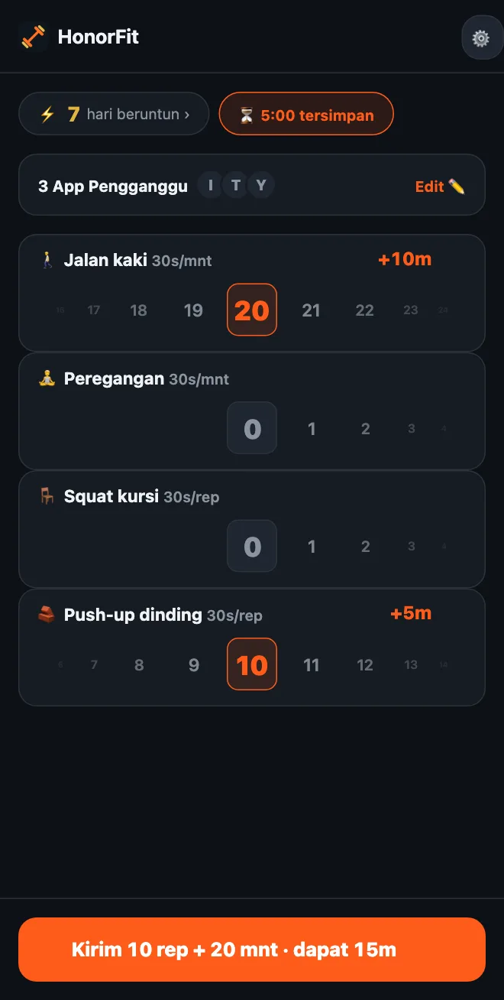

Tidak bisa push up? Latihan ringan untuk membuka aplikasimu
Halo semuanya! HonorFit lebih dikenal sebagai aplikasi blokir push up: aplikasimu tetap terkunci sampai kamu melakukan beberapa rep dan mencatatnya sendiri. Tapi kalau pergelangan tangan, bahu, atau lututmu kurang cocok dengan itu, kalau kamu duduk di depan meja seharian, atau kalau push up memang sedang tidak memungkinkan, itu sama sekali tidak masalah.
Buatku, push up sebenarnya bukan intinya. Intinya adalah ada “polisi tidur” kecil antara kamu dan scrolling, yang kebetulan juga baik buatmu. Jalan kaki keliling kompleks juga bisa melakukan itu sama baiknya. Ini cara mengatur HonorFit dengan gerakan yang memang bisa kamu lakukan.
Kalau kamu pakai versi gratis
Versi gratis memberimu empat latihan bawaan: push up, sit up, pull up, dan squat. Dari keempatnya, squat yang paling ringan, dan nilainya 30 detik per rep.
Dan karena ini sistem kejujuran, tidak ada yang mengecek squat-mu seperti apa. Kalau squat penuh terlalu berat, berdiri dari kursi lalu duduk lagi juga dihitung. Sama halnya dengan push up bersandar ke dinding atau meja dapur. Kamu yang menentukan apa itu satu rep, dan tinggal mencatatnya dengan jujur.
Dengan Pro: pilih latihanmu sendiri
Pro (di AS US$3 per bulan atau US$19,99 sekali bayar; harganya beda-beda tergantung negara dan mata uang, dan toko aplikasinya akan menampilkan harga lokalmu) memungkinkanmu menambah, mengganti nama, dan menghapus latihan, serta mengatur nilainya masing-masing. Caranya lewat ikon roda gigi di layar utama, lalu kartu Latihan. Aku sudah menulis setiap langkah editornya di sini. Ini hal-hal yang akan aku coba.
Latihan berdurasi (dicatat dalam menit)
Pindahkan latihan apa saja ke Menit, atau ketuk salah satu saran yang ada tanda ⏱. Yang cocok di sini:
- 🚶 Jalan kaki. Favoritku untuk ini. Mungkin yang paling gampang.
- 🧘 Yoga, atau ganti namanya jadi Peregangan kalau itu lebih sesuai dengan yang kamu lakukan.
- 🏊 Renang dan 🚴 Bersepeda, dua-duanya ramah untuk sendi.
- 🪷 Meditasi. Bukan olahraga, tapi ada di daftar, dan sepuluh menit tenang itu tukaran yang lumayan untuk sepuluh menit TikTok.
Latihan berdurasi mulai dari 30 detik waktu app per menit, jadi jalan kaki 20 menit dapat 10 menit. Rodanya menghitung menit penuh, sampai 100 sekaligus.
Gerakan di meja kerja (dicatat dalam rep)
Ketuk ＋ Tambah latihan dan ketik namanya. Beberapa yang bisa dilakukan di kantor atau di kos atau apartemen kecil, tanpa alat:
- Squat kursi (duduk-berdiri): berdiri dari kursi, lalu duduk lagi.
- Push-up dinding atau push-up meja: push up bersandar ke dinding atau meja yang kokoh. Makin tinggi tumpuannya, makin ringan.
- Calf raise: jinjit, lalu turun lagi. Bisa sambil menunggu microwave.
- Jalan di tempat: saran High knees, tapi lebih pelan. Ganti saja namanya kalau mau.
- Glute bridge dan Kegel: tidak berisik, tanpa alat, dan Kegel bisa kamu lakukan sambil rapat tanpa ada yang tahu. Aku menulis satu tulisan khusus soal itu.
Gerakan tahan (plank, wall sit)
Karena roda menit menghitung menit penuh, plank 20 detik kurang cocok di situ. Aku sarankan gerakan tahan tetap di Rep dan tentukan sendiri arti satu rep, misalnya “satu kali tahan 20 detik”. Plank dan Wall sit sudah ada di daftar saran.
Berapa nilai yang pas untuk masing-masing?
Latihan baru mulai dari 30 detik per rep. Kamu bisa naikkan atau turunkan 5 detik setiap kali. Beberapa titik awal:
| Latihan | Hitungan | Dapat | Contoh |
|---|---|---|---|
| 🚶 Jalan kaki | Menit | 30s per menit | Jalan kaki 20 menit = 10 mnt |
| 🧘 Peregangan | Menit | 30s per menit | 10 menit = 5 mnt |
| 🪑 Squat kursi | Rep | 30s per rep | 10 = 5 mnt |
| 🧱 Push-up dinding | Rep | 30s per rep | 10 = 5 mnt |
| Calf raise | Rep | 10–15s per rep | 20 kali × 15s = 5 mnt |
| Plank | Rep (1 rep = tahan 20s) | 1 mnt per rep | 3 kali tahan = 3 mnt |
Ini cuma perkiraanku soal apa yang terasa adil. Angka yang tepat adalah angka yang benar-benar mau kamu bayar, bukan yang bikin kamu curang. Kalau jalan kaki adalah kebiasaan yang paling ingin kamu bangun, kasih nilai lebih, misalnya 1 menit per menit.

Beberapa susunan yang bisa kamu contek
- Hari kerja di meja: Squat kursi, Push-up dinding, Calf raise, Jalan kaki.
- Santai: Jalan kaki, Peregangan, Squat kursi, Push-up dinding (ini yang ada di screenshot di atas).
- Tenang: Jalan kaki, Yoga, Meditasi.
- Kamar yang sepi: Glute bridge, Kegel, Squat kursi, Jalan kaki.
Aku sarankan cukup tiga atau empat, karena tiap latihan punya roda sendiri di layar utama.
Dan kalau kamu sedang cedera, merasa nyeri, atau punya kondisi kesehatan tertentu, tanyakan ke dokter atau fisioterapis gerakan apa yang aman untukmu. Aku cuma bikin aplikasi blokir; bukan orang yang tepat untuk ditanya soal lututmu, haha.
HonorFit Blocker adalah aplikasi blokir gratis untuk iPhone dan Android. Sistem kejujuran, tanpa kamera, tidak ada data yang keluar dari HP-mu. Latihan kustom dan latihan berdurasi tersedia di Pro. Memang tidak untuk semua orang, tapi siapa tahu ada di antara kalian yang suka!